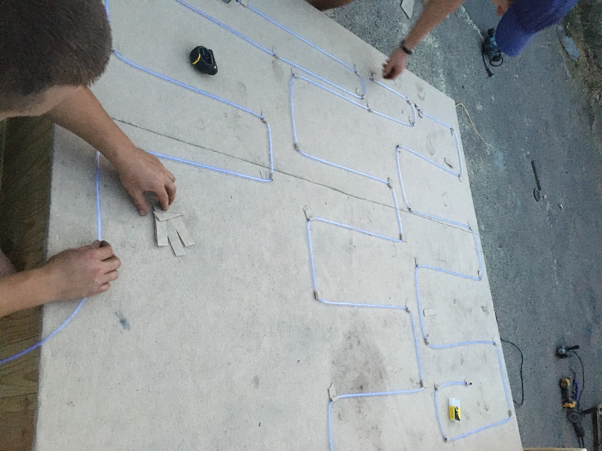

Проблематика
 Н.І. Набережна, як на мене — взагалі проблема. Тут некомфортно перебувати. Це 50 відтінків бетону, шум, брак зелені, сморід із Дніпра. Точно не набережна Монако, де ти можеш комфортно гуляти.
Н.І. Набережна, як на мене — взагалі проблема. Тут некомфортно перебувати. Це 50 відтінків бетону, шум, брак зелені, сморід із Дніпра. Точно не набережна Монако, де ти можеш комфортно гуляти.
Завдання, яке вирішує «мосс-модуль» — зробити простір затишнішим і привабливішим. Звичайно, це крапля в морі. Ми зробили його в розмірі 2 на 2 метри, він дуже маленький, але ми його зробили з гарного дерева, мох зелений. Так ми зможемо перевірити, наскільки ефективно він поглинає шум і пил.
Експеримент
«Міське сафарі»
Д.Р. На набережній просто неймовірно брудно й неймовірно некомфортно. Там багато машин, шум, бруд і сірість. Ми помітили, що люди, які гуляють набережною, не отримують великого задоволення. Нам здалося, що було б дуже добре виправити це.
Н.С. На воркшопі «Міське сафарі» ми бігали Подолом і бачили купу проблем. Проте вирішили зупинитися саме на набережній. Ми визначили основну проблему цього місця — брак озеленення. Ми хотіли знайти рішення, яке б додавало зелені й, у той самий час, ефективно зменшувало б рівень забруднення повітря й рівень шуму.
Першочергова ідея — створити зелену оазу, висадивши дерева. Проблема в тому, що це неможливо. Деревам потрібен доступ до ґрунту. Навіть якби нам дозволили щось подібне зробити, нам довелося би знімати шари асфальту, замовляти техніку.

Візуалізація перших ідей
Переосмислення рішення
Н.С. Ми почали шукати референси. Я натрапила на відео зі стіною з мохом у Лондоні. Таке рішення нам теж підійшло. Мох очищує повітря, це й зелене насадження, він не потребує особливого догляду. Саме тому ми на ньому зупинилися й почали розвивати цю ідею.
Н.І. Моя перша бентега полягала в тому, що це рішення вже було перевірене — в Лондоні, Берліні та інших містах. Є звіти, зафіксовані кейси. Мені, як координаторці, потрібно було наштовхнути команду на певну інновацію.
Консультації з експертами
Н.І. Ми поспілкувалися з Юрою Грановським (керівник напрямку досліджень в «Агентах змін»). Він із командою проводив комплексне дослідження Подільської набережної. Він дав нам багато класних порад: потрібно подумати над системою поливу, захистом від вандалізму, додати модулю якихось нових функцій. Дівчата пропонували тягнути воду з Дніпра. Юра запропонував подивитися на результати їхніх досліджень якості води і зрозуміти, чи підходить вона для поливу. В учасниць команди на цей момент у голові все було занадто просто. Ми почали працювати над деталізацією рішення.
Нотатки з обговорення експерименту з Юрою Грановським
Н.І. Також ми спілкувалися з експертом з охорони довкілля Андрієм Хрутьбою. Він поділився враженнями про значущість такого експерименту та дав контакти інших експертів. На думку Андрія, такий експеримент може дати нову гарну практику для Києва.
Н.С. З конструктивним рішенням і виготовленням нам допомагав Дмитро. Він також брав участь і в експерименті з компостером. Ми самостійно розмірковували над матеріалами, хотіли зробити конструкцію з дерева. А Дмитро все це спроєктував у деталях. У команді потрібно мати досвідчену людину. Бо ідея класна, а от зробити так, щоби все не розвалилося і трималося докупи — це трошки важче.
Конструктивне рішення від команди Дмитра
Технічне рішення
Н.С. Ми відштовхувалися від конструкції CityTree, яку використовують у Лондоні. Збиралися командою та адаптовували її під наші реалії. Наприклад, ми не змогли б зібрати таку величезну конструкцію, влаштувати автоматизований полив із комп’ютерними «мізками» й авторегуляцією. Нам потрібно було спростити рішення настільки сильно, щоби влізти в наш невеликий бюджет.
Усе це відбувалося в декілька етапів. Коли ми прийшли до більш-менш остаточного варіанту, Дмитро допоміг нам оформити цей проєкт. Ми з ним говорили, писали, висловлювали власні думки.
 Д.К. Всередині модулю — зварна металоконструкція. Зверху ми обшили її дошкою. Під мохом проклали систему поливу й постелили субстрат. Субстрат має вбирати й рівномірно розповсюджувати вологу. Дошки полакували, щоби захистити їх від вологи. Нічого складного.
Д.К. Всередині модулю — зварна металоконструкція. Зверху ми обшили її дошкою. Під мохом проклали систему поливу й постелили субстрат. Субстрат має вбирати й рівномірно розповсюджувати вологу. Дошки полакували, щоби захистити їх від вологи. Нічого складного.
Команда Дмитра збирає конструкцію
Н.С. Щодо поливу в нас були ідеї з річковою водою, з дощовою водою, але врешті ми прийшли до закритого резервуара. Щоб у нього не потрапляло сміття, довелося би ставити якісь додаткові фільтри. Також ми подивилися, скільки коштує звичайний маленький насосик, і після цього все стало зрозуміло — робимо без насосу. У результаті ми вирішили влаштувати закритий резервуар і підливати періодично в нього воду.
Д.Р. У верхній частині модулю — резервуар із водою. За допомогою гравітації вода буде собі стікати трубками до моху, підживлюючи його водою.
Д.К. З резервуара виходять 3 шланги, які протягуються рівномірно стінками модулю. У шлангах зробили маленькі отвори. Це принцип крапельного поливу.
У резервуар потрібно додавати воду. Наскільки швидко вона стікає, ми не знаємо, не проводили експериментів. Мох потребує багато вологи.

Система розподілу води
Д.К. Для утримання й розповсюдження вологи ми використали листовий субстрат. За структурою він схожий на ковролін. Це спеціальна тканина, що добре утримує й розповсюджує вологу.
Н.С. Мох буде закріплюватися деякий час. Тому ми покрили його зверху ледь помітною сіткою, яка також захистить його від вандалізму. Не так просто тепер буде відірвати шматок.
Отримання дозволів
Н.І. Нам потрібно було дістати дозвіл на встановлення модулю від «Київблагоустрою». Першого листа ми відправили їм ще в січні. За ті кілька місяців, поки ми розв’язували інші питання, а я ще і працювала з іншими експериментами, ми не отримали ніякої відповіді.
25 травня я відправила запит через «15-51», уже зі всіма візуалізаціями, оскільки конструктивне рішення ми вже розробили. І вже 26 травня ми отримали повідомлення від «Подільського благоустрою», що «вони не заперечують». Зі мною зв’язалися і сказали, що вони в захваті від нашого проєкту. Наступного дня ми зустрілися на локації і проговорили весь проєкт у деталях. Нам повідомили, що залишилося лише дістати контрольну картку від «Київблагоустрою».
Спілкування з «Київблагоустроєм» тягнулося понад 2 місяці. Мою заяву «губили» 4 рази. На мене кричали та грубіянили. Не забуду, як жіночки поверталися з обіду й зустрічали мене зі словами «О, знову ця забита прийшла!» — у мене багато татуювань і я приходила у футболці. Мені навіть тоді відповісти не було чого, як бабусям під під’їздом.
Н.І. Після спілкування з тими, хто хотів нам допомагати в «Подільському благоустрої», мені дзвонили із «Київблагоустрою». Вибачалися й говорили: «Приходьте, зробимо вам контрольну картку.» Та коли я запитувала, з ким розмовляю, жіночка кидала слухавку. Коли я приїхала, мене запитали: «Хто дзвонив?!» А потім знову крики та грубіянство. Кожного візиту я відчувала себе як у фільмі «Левіафан», коли головний герой сидить у міліції й каже: «Я не розумію, що відбувається...» Там я зустрічала схожих людей. Наприклад, бабусю, яка хотіла біля свого будинку влаштувати квітник.
Врешті-решт мені дали телефон інспектора Мерзенюка, з яким я мала розв’язати всі питання. Та і він не допоміг, і з часом теж почав кричати на мене й легко перейшов на «ти».
Коли це все сильно накопичилося, я написала довге повідомлення на Facebook-сторінку «Київблагоустрою». Усе розповіла, додала фотографії листів. Наступного дня зі мною зв’язалися телефоном і попросили розповісти все в деталях. А потім сказали: «Насте, нам шкода, що все відбулося саме так. Дякуємо за фотографії й пояснення, будемо розбиратися.»
Невдовзі повідомили, що контрольна картка нам непотрібна. Тобто ми могли встановлювати одразу, як дістали дозвіл від «Подільського благоустрою». Я подзвонила підряднику Дмитру, повідомила команду й ми почали готуватися до встановлення.
Збір моху
Н.І. Ми вирішили зібрати мох у лісі, а не купляти. Наша конструкція присвячена моху і для нас було дуже важливо зберегти дух першопрохідця: накопати мох, очистити його.
У лісі в нас був із собою лист ПВХ розміром 2 на 2 метри. Ми обережно викладали зібраний мох на цей лист, щоби зрозуміти, скільки ще потрібно. Я відчувала, наскільки він живий, коли чистила від шматків кори та інших залишків лісу. Усе те, що я читала про мох до цього, я змогла тоді відчути. Наскільки добре він тримає вологу. Він м’який та пухнастий, у ньому живе багато комах.
Встановлення
Н.І. Це було складно, ми не встигали, заклали замало часу на монтаж. Ми привезли мох і гадали, що швидко його почистимо. Але я робила це три години. Потім декілька годин його рівномірно розкладали. І мене постійно запитували: «Насте, ну що, накладаємо сітку? Ти художниця, ти так усе бачиш?» Я постійно хвилювалася, адже мох — це живий матеріал.
Д.К. Мені сподобався кінцевий результат. Дуже цікаво працювати над такими проєктами. Ми бачили це все на картинці, але в реальності — зовсім інше. Це як слухати музику по радіо, а потім потрапити на живий концерт. Ми навіть не очікували такого результату.
Н.І. Здається, це дуже маленький проєкт. Проте я все ж радію тому, що він здатен щось змінити. Можливо, змінить підходи в роботі «Зеленбуду» чи «Подільського благоустрою». Я пам’ятаю, який у всіх був культурний шок: «Дівчино, навіщо воно тобі? Навіщо ти просиш на це дозвіл?» Ти їм розповідаєш про суть експерименту, і вони щиро вірять і допомагають тобі.
Майбутнє
Догляд за мохом
Н.І. Гадаю, ми ще будемо зустрічатися із закладами поруч та обговорювати співпрацю. Поруч розташовується МакДональдз, недалеко є купа закладів, де можна набрати води. Її не потрібно багато.
Масштабування рішення
Н.І. Ми встановлювали модуль ввечері вихідного дня. Частіше за все до нас підходили діти — доторкалися до моху, цікавилися, що це за трава. Я пояснювала їм, на що здатен мох. Діти біля батьків слухали з відкритими ротами. Говорили, що це дуже цікаво, що вони цього не знали.
Тому мені хотілося б встановити подібні конструкції поблизу дитячих майданчиків. Коли я гуляю із собакою, коли проходимо повз дитячі майданчики, я бачу, як дітям цікаво взаємодіяти з квітами, піском. Діти з дитинства розуміли б, що природу навколо варто зберігати та використовувати з користю. Мені подобається, коли є якась форма взаємодії, коли люди можуть доторкнутися до природи.